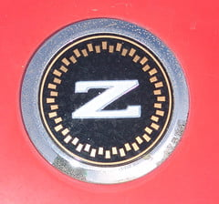

-
Re: Anybody near Westland,MI Custom Hood Liner (pics)
Tagged this thread so I can remember to read it. Can't view the images . .blocked at work.
:-( -
Re: Anybody near Westland,MI Custom Hood Liner (pics)
There are atleast differences for the hood scoop. I'll compare them in a few days if noone else does first.Rick88ss wrote: I just thought of something since my Z is an 88. Do the 84-86 Z's have the same underhood support bracing and use the same hood liner?1985 NA2T(now RB) * 1988 SS x2 * 1984 AE x3 * 2006 350Z

-
Re: Anybody near Westland,MI Custom Hood Liner (pics)
[quote]Rick88ss wrote:right- but the printing process doesn't always work out that way. a low resolution jpeg will net you a low resolution logo.Originally posted by Careless
just saying so it all works out. i'd like to see one done and if my car didn't pee gasoline sometimes i would probably be interested. once i sort the chemical problems out :-P -
Re: Anybody near Westland,MI Custom Hood Liner (pics)
Sweet ..
If details can be worked out .. ie .. he gets the proper pattern.
I might have some artwork to work with ..
8) -
Re: Anybody near Westland,MI Custom Hood Liner (pics)
I don't have the two hoods in front of me, but the underhood bracing looks different if memory serves. The hoods are different sizes and shapes, so I'd assume so anyway.Feedback- viewtopic.php?f=18&t=19840

-
Re: Anybody near Westland,MI Custom Hood Liner (pics)
sounds interesting -
Re: Anybody near Westland,MI Custom Hood Liner (pics)
Yes the underhood insulation is different for the earlier and later years.... -
Re: Anybody near Westland,MI Custom Hood Liner (pics)
But uh, yea… if this turns into a group buy or better yet a continually offered product I would be interested.Feedback- viewtopic.php?f=18&t=19840
-
Re: Anybody near Westland,MI Custom Hood Liner (pics)
I wouldnt mind paying some cash for a nice piece. I have been doing homework and calling a few companies that has made units like these but either it wont be flexable enough or they dont make it for our cars. It really brings out the look of the engine bay when there is a nice piece there and not falling apart =).
If you think about it, these arent avalible any more.
I would be down for a set. I wouldnt mind making a mock-up of mine.
That would be sick if it was in the middle
=/ but I am in california.My Build Thread -
Re: Anybody near Westland,MI Custom Hood Liner (pics)
the Z32 Z emblem is my favorite in looks, but it doesn't really fit with our cars, I think the proper style for the car should be used1985 NA2T(now RB) * 1988 SS x2 * 1984 AE x3 * 2006 350Z
-
Re: Anybody near Westland,MI Custom Hood Liner (pics)
I went down to see Gonzalo yesterday and he installed a hoodliner for me. It cost me $85 and it looks freaking phenomenal! I did not have any emblems installed as I have another idea for my car. (Shiro Nakamura's signature) Gonzalo will be on vacation for the next 2 weeks and he is in possession of my OE hoodliner. I am going to the pick an pull today to get another OE hood liner from a 84-86 so that we all can have them made.
Installation requires you to take the hood off. The whole process takes about 2.5-4 hours depending on how dirty your hood is.
This is the only picture that I have taken so far, Gonzalo will be adding the pictures that he took to his website ASAP. I will take more pictures another time, maybe tonight after I get the transmission installed again.
 Shiro Special # 981 Being assembled in my spare time Chromoly acquired!
Shiro Special # 981 Being assembled in my spare time Chromoly acquired!
Originally posted by BoostedMamma -
Re: Anybody near Westland,MI Custom Hood Liner (pics)
I went to the pick and pull today and found 5 z31's there, 3 are 86's. The other two were 84-85's, one of which was a turbo. So I have the OE hoodliner from the 84T and an 86, they are the same except for the hole for the scoop. As soon as Gonzalo returns from vacation I will drop them off to him so that he can make templates.
He also stated that he will work with you guys to start a group buy. If I weren't so busy I would mediate between him and ya'll.Shiro Special # 981 Being assembled in my spare time Chromoly acquired!
Originally posted by BoostedMamma -
Re: Anybody near Westland,MI Custom Hood Liner (pics)
from a design standpoint- regarding the letter.
letters just floating around in empty space often look weird, especially due to any undulations and bumps in the surface on which they are reproduced.
if you take - for example, a shape and have it sit in the perfect center or a center that is mathematically proportional on at least 3 sides, it will look a lot better.
This is how we presented logos to judges when doing artwork during college. It often ends up more pleasing to the eye.
I would think it's the same on the Z because of the length of the good. the bottom of the hood is further away from the viewer. Having it in the absolute center will not make it seem as though it's in the center of the hood- although mathematically it will be.
have you guys thought about encasing the logo in the same emblem that nissan did?

or maybe the logo on racinjitter's front bumper, seen in the picture he posted last -
Re: Anybody near Westland,MI Custom Hood Liner (pics)
I'd like to have one with a Rick Astley silhouette.......... just sayin.1985 NA2T(now RB) * 1988 SS x2 * 1984 AE x3 * 2006 350Z
-
Re: Anybody near Westland,MI Custom Hood Liner (pics)
I've always wanted something to dress up underneath the hood .. why does installation require hood removal?Racinjitter wrote: I went down to see Gonzalo yesterday and he installed a hoodliner for me. It cost me $85 and it looks freaking phenomenal! I did not have any emblems installed as I have another idea for my car. (Shiro Nakamura's signature) Gonzalo will be on vacation for the next 2 weeks and he is in possession of my OE hoodliner. I am going to the pick an pull today to get another OE hood liner from a 84-86 so that we all can have them made.
Installation requires you to take the hood off. The whole process takes about 2.5-4 hours depending on how dirty your hood is.
This is the only picture that I have taken so far, Gonzalo will be adding the pictures that he took to his website ASAP. I will take more pictures another time, maybe tonight after I get the transmission installed again.


Copyright © 2006–. All rights reserved. Privacy Policy